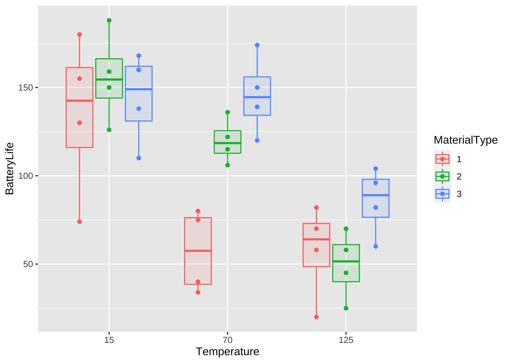
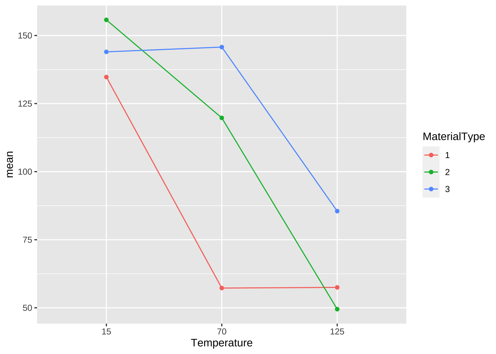

제 1 장 전지의 수명 실험
전지(battery)를 제조하는 회사의 기술자들이 전지의 수명(BatteryLife)에 영향을 미치는 두 요인, 온도(Temperature)와 재료(MaterialType)의 효과를 알아보기 위해서 실행한 실험입니다.
기술자들은 온도가 크게 변할 때 전지의 수명에 어떤 영향을 미치는지 알아보기 위하여 실험을 실시하였다. 온도는 3개의 수준(15도, 70도, 125도)을 고려하였다. 전지를 생산하는 재료가 3개이므로 재료는 3개의 수준(type 1,2,3)으로 구성되어 있다. 이 실험은 9 개의 처리(\(ab=3\times 3=9\))에 대하여 각각 4번의 반복 측정(\(r=4\))을 실시하였다.
자료의 출처는 (Montgomery 2017) 에 나와 있다
자료를 얻기 위해서는 다음과 같은 R 프로그램을 실행하여 패키지 MontgomeryDAE를 설치하고 실행해야 한다.
install.packages("remotes")
remotes::install_github("ehassler/MontgomeryDAE")
library(MontgomeryDAE)1.1 자료 읽기
이제 전지의 수명 실험 자료를 읽어 오자. 전지의 수명 실험에 대한 자료는 데이터프레임 Table5.1에 있다.
df <- Table5.1
head(df) # 자료의 앞부부만 보기 ## MaterialType Temperature BatteryLife
## 1 1 15 130
## 2 1 15 74
## 3 2 15 150
## 4 2 15 159
## 5 3 15 138
## 6 3 15 168함수 str()은 자료의 구조와 자료 안에 있는 변수의 형식을 보여준다.
str(df) # 자료의 구조를 알아보는 명령## 'data.frame': 36 obs. of 3 variables:
## $ MaterialType: chr "1" "1" "2" "2" ...
## $ Temperature : num 15 15 15 15 15 15 15 15 15 15 ...
## $ BatteryLife : num 130 74 150 159 138 168 155 180 188 126 ...위의 결과를 보면 데이터프레임 df에 있는 변수 MaterialType은 문자형 변수(chr)이고 나머지는 숫자형 변수(num)이다. 두 요인에 대한 변수인 MaterialType와 Temperature를 함수 factor()를 이용하여 범주형 변수로 만들어 주자 .
df$MaterialType <- factor(df$MaterialType)
df$Temperature <- factor(df$Temperature)
str(df)## 'data.frame': 36 obs. of 3 variables:
## $ MaterialType: Factor w/ 3 levels "1","2","3": 1 1 2 2 3 3 1 1 2 2 ...
## $ Temperature : Factor w/ 3 levels "15","70","125": 1 1 1 1 1 1 1 1 1 1 ...
## $ BatteryLife : num 130 74 150 159 138 168 155 180 188 126 ...1.2 자료의 시각화와 기초 통계량
이제 처리별로 효과를 시각적으로 비교하기 위하여 자료들에 대한 산점도와 상자그림을 그려보자
df %>%
ggplot() +
aes(x = Temperature , y = BatteryLife, fill=MaterialType, color=MaterialType, group = interaction(Temperature, MaterialType)) +
geom_boxplot(alpha = 0.1, width = 0.75) +
geom_beeswarm(dodge.width = 0.75)
다음으로 6개의 처리 조합에 대한 전지 수명의 기초통계량(평균과 표준편차)을 구해보자.
dfs <- df %>% group_by(MaterialType, Temperature) %>% summarise(mean=mean(BatteryLife), sd=sd(BatteryLife))## `summarise()` has grouped output by 'MaterialType'. You can override using the `.groups` argument.dfs## # A tibble: 9 x 4
## # Groups: MaterialType [3]
## MaterialType Temperature mean sd
## <fct> <fct> <dbl> <dbl>
## 1 1 15 135. 45.4
## 2 1 70 57.2 23.6
## 3 1 125 57.5 26.9
## 4 2 15 156. 25.6
## 5 2 70 120. 12.7
## 6 2 125 49.5 19.3
## 7 3 15 144 26.0
## 8 3 70 146. 22.5
## 9 3 125 85.5 19.3이제 위에서 계산된 처리 그룹에 대한 평균으로 상호작용 그림을 그려보자. 아래 그림에서 온도가 증가할 수록 전지의 수명이 감소하는 경향을 보이고 있다. 또한 각 재료에 따른 온도의 변화가 수평으로 나타나지 않고 있음을 알 수 있다. 이러한 점은 온도와 재료 사이에 유의한 상호작용이 있다고 예측할 수 있다.
dfs %>%
ggplot() +
aes(x = Temperature , y = mean, color =MaterialType) +
geom_line(aes(group = MaterialType)) +
geom_point()
1.3 분산분석표와 가설검정
이제 다음과 같은 모형에서 이원배치법에서의 가설검정을 수행하기 위하여 분산분석 표를 구해보자.
\[ x_{ijk} = \mu + \alpha_i + \beta_j + (\alpha\beta)_{ij} + e_{ijk} \]
| 요인 | 제곱합 | 자유도 | 평균제곱합 | \(F_0\) |
|---|---|---|---|---|
| 요인 \(A\) | \(SS_A\) | \(a-1\) | \(MS_A\) | \(MS_A/MS_E\) |
| 요인 \(B\) | \(SS_B\) | \(b-1\) | \(MS_B\) | \(MS_B/MS_E\) |
| 상호작용 \(A \times B\) | \(SS_{A \times B}\) | \((a-1)(b-1)\) | \(MS_{A \times B}\) | \(MS_{A \times B}/MS_E\) |
| 잔차 \(E\) | \(SS_E\) | \(ab(r-1)\) | \(MS_E\) | |
| 총합 | \(SS_T\) | \(abr-1\) |
dfaov <- aov(BatteryLife~ MaterialType + Temperature + MaterialType:Temperature, data=df)
# This is equivalent to aov(BatteryLife~ MaterialType *Temperature , data=df)
summary(dfaov)## Df Sum Sq Mean Sq F value Pr(>F)
## MaterialType 2 10684 5342 7.911 0.00198 **
## Temperature 2 39119 19559 28.968 1.91e-07 ***
## MaterialType:Temperature 4 9614 2403 3.560 0.01861 *
## Residuals 27 18231 675
## ---
## Signif. codes: 0 '***' 0.001 '**' 0.01 '*' 0.05 '.' 0.1 ' ' 1상호작용에 대한 가설 검정 \[ H_0: (\alpha \beta)_{11} = (\alpha \beta)_{12} =\cdots = (\alpha \beta)_{3,3} =0 \quad \text{ vs.} \quad H_1: \text{ not } H_0 \]
분산분석표에서 상호작용에 대한 가설 검정을 위한 F-통계량은 다음과 같다.
\[ F_0 = \frac{MS_{A \times B}}{MS_E} =\frac{SS_{A\times B}/\phi_{AB}} {SS_E/\phi_E} = \frac{9614/4}{18231/27} = 3.560 \]
위의 F-통계량에 대한 p-값은 0.0186으로 유의수준 0.05보다 작으므로 귀무가설 \(H_0\)를 기각한다. 따라서 온도와 재료의 상호작용은 유의하다.
주효과에 대한 가설 검정
위에서 유의한 상호작용이 있다고 판단하였기 때문에 주효과에 대한 가설검정은 기술적 의미가 없다. 기술적으로 의미가 없다는 것은 유의한 상호작용이 있으면 이미 주효과 \(A\) 의크기가 \(B\) 의 수준에 따라서 다르므로 주효과가 유의하게 있다는 것을 뜻한다.
1.4 분산분석 후의 추정
1.4.1 모평균에 대한 추론
이원배치에서 유의한 상호작용이 있는 경우 처리수준 \(A_iB_j\)에 대한 모평균 \(\mu_{ij}\) 은 다음과 같다.
\[ \mu_{ij} = \mu + \alpha_i + \beta_j + (\alpha \beta)_{ij} = \mu + \tau_{ij} \]
이때 \(\mu_{ij}\) 에 대한 추정량은 처리수준 \(A_iB_j\)에서의 관측값들의 평균 \(\bar {x}_{ij.}\)으로 다음과 같은 분포를 따른다.
\[ \bar {x}_{ij.} \sim N(\mu_{ij}, \sigma^2_E/ r) \]
오차항의 분산 \(\sigma^2_E\)는 분산분석표에서 \(MS_E\)로 추정할 수 있다.
\[ \hat \sigma^2_E = MS_E = \frac{SS_E}{ab(r-1)} =\frac{18231}{27} = 675 \]
위의 결과를 이용하면 처리수준 \(A_iB_j\)에 대한 모평균 \(\mu_{ij}\)에 대한 \(100(1-\alpha)\)% 신뢰구간은 다음과 같이 주어진다.
\[ \bar x_{ij.} \pm t(1-\alpha/2, ab[r-1]) \sqrt{ \frac{MS_E}{r}} \]
예를 들어 전지의 수명실험에서 온도가 70도이고(\(i=2\)) 재료의 형테가 3인 경우(\(j=3\)) 수명 시간의 평균 \(\mu_{23}\) 에 대한 95% 신뢰 구간을 구해보자. 일단 위의 기초 통계량에서 \(\bar x_{13.}=146\) 이고 분산분석표에서 \(MS_E =675\), \(r=4\) 그리고 t-분포의 백분위수 \(t(0.975, 27)\) 은 다음과 같이 주어진다.
qt(0.975, 27)## [1] 2.051831따라서 \(\mu_{23}\) 에 대한 95% 신뢰 구간은 다음과 같다.
\[ \bar x_{23.} \pm t(1-\alpha/2, ab[r-1]) \sqrt{ \frac{MS_E}{r}} = 146 \pm (2.05)\sqrt{\frac{675}{4}} = (119, 172) \]
패키지 emmeans에 있는 함수 emmeans()를 다음과 같이 사용하면 각 처리에 대한 평균의 95% 신뢰구간을 쉽게 구할 수 있다. 함수 emmeans()의 첫 번째 인자는 분산분석의 결과(aov()의 결과)이며 다음의 인자들은 요인에 대한 변수명을 써주면 된다.
emmeans(dfaov, "MaterialType","Temperature")## Temperature = 15:
## MaterialType emmean SE df lower.CL upper.CL
## 1 134.8 13 27 108.1 161.4
## 2 155.8 13 27 129.1 182.4
## 3 144.0 13 27 117.3 170.7
##
## Temperature = 70:
## MaterialType emmean SE df lower.CL upper.CL
## 1 57.2 13 27 30.6 83.9
## 2 119.8 13 27 93.1 146.4
## 3 145.8 13 27 119.1 172.4
##
## Temperature = 125:
## MaterialType emmean SE df lower.CL upper.CL
## 1 57.5 13 27 30.8 84.2
## 2 49.5 13 27 22.8 76.2
## 3 85.5 13 27 58.8 112.2
##
## Confidence level used: 0.95함수 emmeans()에서 출력되는 SE는 표분오차(standard error)를 의미하며 이는 평균의 추정량 \(\bar x_{ij.}\)의 표준편차(standard deviation)이다.
\[ \hat{\text{SE}}(\bar x_{ij.}) = \hat{ sd} (\bar x_{ij.}) = \sqrt{ \hat {Var} (\bar x_{ij.})} = \sqrt{\frac{MS_E}{r}} = \sqrt{675/4} = 13.0 \]
1.5 미래의 관측값에 대한 추론
처리수준 \(A_iB_j\)에 대한 미래의 관측값에 대한 신뢰구간을 구하는 경우 관측 오차에 의한 불확실성을 반영하기 때문에 그 신뢰구간은 다음과 같이 주어진다.
\[ \bar x_{ij.} \pm t(1-\alpha/2, ab[r-1]) \sqrt{ \frac{MS_E}{r}+MS_E} \]
참고로 다른 교과서에서는 관측값에 대한 신뢰구간을 예측구간(prediction interval)이라고 부른다. 이는 모수는 추정(estimation)하지만 관측값은 예측(prediction)한다고 말하기 때문이다.